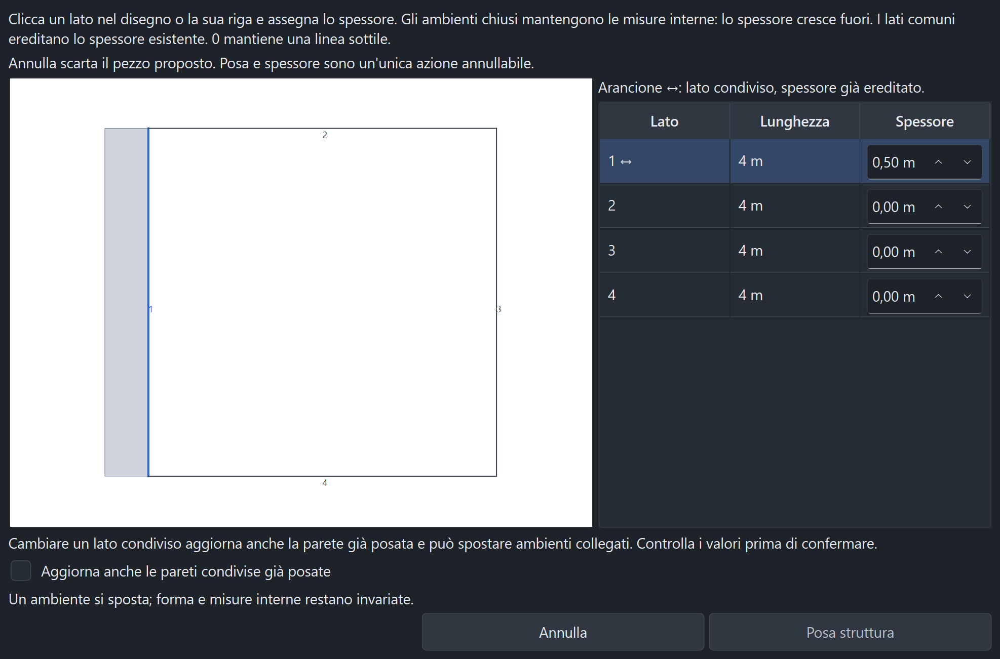

| Situazione | Comportamento |
|---|---|
| Ambiente chiuso | Le quote restano interne e lo spessore cresce all'esterno. I pezzi collegati possono traslare per mantenere le quote. |
| Lato comune | Stesso valore sulle facce corrispondenti. Eredità riconosciuta sulla linea interna e sulla faccia esterna fisica, anche con colori diversi o sovrapposizione parziale. |
| Linea o arco aperto | Spessore e lato sinistro/destro si scelgono guardando il diagramma. |
| Vincolo incompatibile | Raggio, foglio, collisioni e vincoli dei locali vengono verificati prima dell'applicazione. Non vengono applicate modifiche parziali. |
| Rilievo già acquisito | Restano le protezioni contro spostamenti delle coordinate RF, maschere manuali e AP non convertiti. I riferimenti convertiti in precedenza vengono conservati. |
Lo spessore non assegna automaticamente un materiale o un'attenuazione RF. Il diagramma è schematico e riguarda il pezzo proposto: i numeri dei lati non vengono aggiunti alla pianta.
2.185 test e 479 sottotest superati nella suite completa nativa sequenziale (267,82 s, uscita 0). I 30 test dedicati al nuovo flusso passano anche separatamente. Controlli Ruff essenziali, F sui nuovi moduli e compilazione completati. La revisione grafica comprende 48 combinazioni di lingua, tema, scala UI e unità, oltre a linea, cerchio e arco in condizioni di scala elevata.
Spessori diversi per lato, valori esatti in piedi, lati comuni a entrambe le facce, attacchi parziali e colori differenti, conferma delle modifiche condivise, annulla/ripristina, salvataggio/riapertura, doppio clic e clic sul diagramma. Prove con finestra modale nativa dopo posa trascinata o misurata, sia confermando sia annullando, senza acquisizioni RF accidentali. Layout verificati in EN/IT/FR/ES, chiaro/scuro, scale 100/125/175%, metri/piedi.
Non sono stati generati nuovi eseguibili o pacchetti. Le prove documentano i casi verificati e non costituiscono una garanzia su qualsiasi geometria.